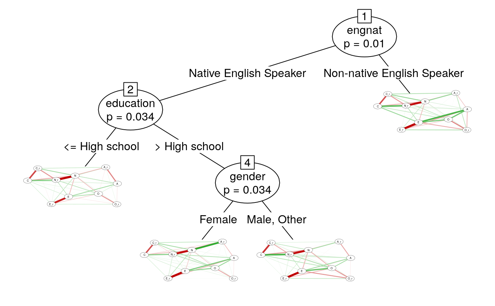

This dataset includes 1899 online participants who participated in a questionnaire available through the Open Source Psychometrics Project (https://openpsychometrics.org/), an organization that maintains an open website for the public to take psychometric tests for educational and entertainment purposes
tipi
a dataframe. Columns represent questionnaire items and rows represent individuals
The Ten Item Personality Questionnaire (TIPI) is a brief inventory of the Big Five personality domains. Each personality domain is assessed with two items. One item measures the domain normally and the other item measures the domain in reverse (e.g., "reserved, quiet" for reverse extraversion).
Labels for TIPI items in this dataset correspond to the first letter of each Big Five personality domain (Extraversion, Neuroticism, Conscientiousness, Agreeableness, and Openness to experience), with the character ``r'' indicating items that measure the domain in reverse.
Also includes demographics such as education level, rearing environment (urban/suburban/rural), gender, English as a native language, age, religion, sexual orientation, race, voting status, marriage status, and number of children in one's family during childhood.
The dataset is publicly available at http://openpsychometrics.org/_rawdata/GCBS.zip and can be cited as:
OpenPsychometrics (2019). Generic Conspiracist Beliefs Scale Survey. Retrieved from http://openpsychometrics.org/_rawdata/GCBS.zip
head(tipi)#> E A_r C N O E_r A C_r N_r O_r education urban gender #> 1 5 3 6 2 6 6 7 2 7 1 University degree <NA> Male #> 2 6 7 6 7 6 3 7 5 1 1 Less than high school Suburban Female #> 4 6 7 7 5 7 6 5 1 5 1 University degree Rural Male #> 5 1 3 7 2 6 4 5 5 5 3 High school Suburban Male #> 7 2 5 4 2 5 6 2 3 5 5 High school Suburban Male #> 8 4 5 6 2 7 4 5 5 3 1 High school Rural Male #> engnat age religion orientation #> 1 Non-native English Speaker 28 Atheist Heterosexual #> 2 Native English Speaker 14 Agnostic Bisexual #> 4 Native English Speaker 25 Other Heterosexual #> 5 Native English Speaker 37 Atheist Bisexual #> 7 Native English Speaker 17 Agnostic Heterosexual #> 8 Native English Speaker 23 Atheist Heterosexual #> race voted married #> 1 Other No Never married #> 2 Indigenous Australian, Native American, or White No Never married #> 4 Indigenous Australian, Native American, or White Yes Never married #> 5 Indigenous Australian, Native American, or White No Currently married #> 7 Indigenous Australian, Native American, or White No Never married #> 8 Indigenous Australian, Native American, or White No Never married #> familysize #> 1 1 #> 2 1 #> 4 3 #> 5 2 #> 7 2 #> 8 3# \donttest{ ## Example networktree with TIPI data(tipi) nodeVars <- c("E","A_r","C","N","O","E_r","A","C_r","N_r","O_r") splitVars <- c("gender","education","engnat") myTree<-networktree(tipi[,nodeVars], tipi[,splitVars]) myTree#> Network tree object #> #> Model formula: #> E + A_r + C + N + O + E_r + A + C_r + N_r + O_r ~ gender + education + #> engnat #> #> Fitted party: #> [1] root #> | [2] engnat in Native English Speaker #> | | [3] education <= High school #> | | [4] education > High school #> | | | [5] gender in Female #> | | | [6] gender in Male, Other #> | [7] engnat in Non-native English Speaker #> #> Number of inner nodes: 3 #> Number of terminal nodes: 4 #> Number of parameters per node: 45 #> Objective function: 35148.69plot(myTree)# }